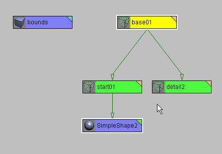

|
DTS Exporter Reference
This section covers in great detail how everything works and has some extra goodies to help you solve some of the more complex problems you may encounter with the engine and DTS export tools.
Valid Scenes:
The following describes how the exporter interprets the scene in 3DStudioMax.
The Bounding Box:
Each scene must contain a bounding box, if you fail to create a bounding box within your scene, the scene will not export. You must also name the bounding box "bounds".
The bounding box should be a box that completely encloses the shape at all points in the animation. When you export your scene, the pivot point of the bounding box from 3DSMax will become the pivot point of your shape in the exported scene. Likewise, ground animation (ground transform) is based on the animation of the bounding box. So if you want to export a running person, you would place the bounding box around the person at time 0, with the origin of the box at the persons feet. As the person runs, you would animate the bounding box to keep pace with the person.
The easiest way to do this would be to link the bounding box to the hips, and set it to only inherit y-position. Notice that in this case the bounding box is not at the scene root level (which is fine).
Based on this example, if you wanted to export a building have part of the building submerged under the ground, you would create the bounding box that surrounds the building (as always) but place the bounding box pivot where you wish the ground to come up to on the building.
It is important to note that the orientation of the bounding box defines the orientation of the object. When you create the bounds, you are creating a mini world that defines how the object will orient itself in the game. Positive Y is forward, and Z is up. The easiest way to deal with this and not confuse yourself is to create the box in world space so that the local orientation of the box is identical to world space. This is done by creating the bounding box is either Perspective, User, of Top view.
Subtrees and Level of Detail:
A subtree is a dummy object at the scene root level with the following types of children: at least one detail level marker (an object whose name ends in a number), and at least one branch (a dummy object with children that have geometry somewhere in the sub-hierarchy).
The detail level markers indicate to the exporter what detail is to be drawn at a given distance. The number corresponds to the pixel size in the game engine at which the shape will draw with these meshes.
E.g., if you have markers named 'detail2' and 'detail36', then when the size is 36 or greater the shape would be drawn with the highest detail level. When the size is between 2 and 36 it would be drawn with the lower detail level ending with the number 2, and when the size was less than 2 nothing would draw.
The name of the marker is unimportant (except the number, of course) but it does get exported and can be used to look up a detail level by the programmer. What lies under the "branch" corresponds to the actual shape. The whole subtree can be under one branch or there can be multiple branches. If you have a shape at the root level and want to export it, the following arrangement should suffice:

An object on the root level will normally be interpreted as a mesh (a detail level) or a subtree (unless it's the bounds node or a sequence object).
If the object has geometry, then it will be interpreted as a mesh. If this mesh does not correspond to any mesh on the shape, it will be flagged as an error unless 'Allow Unused Meshes' is turned on in the Error Control sub-panel of the exporter utility. If "unused meshes" are allowed, then the mesh will be ignored.
If an object on the root level has no geometry (if it's a dummy object, for example) it will be interpreted as a subtree. If it has no detail markers or branches, then it will be flagged as an error unless 'Allow Empty Subtrees' is turned on (in the Error Control sub-panel of the exporter utility panel). If empty subtrees are allowed, then the object will be ignored.
Unlinked Meshes and Level of Detail:
In the exporter there is generally only one subtree (although it supports more if desired) and the artist must supply a different set of meshes to be drawn for each detail level.
This is done by naming different detail levels of the same mesh with the same base name but a different trailing number. E.g., 'head64' and 'head32'. The numbers in the detail level should correspond to the number on the 'detail marker' (see section 'Subtrees').
One detail level of the mesh needs to be linked to the shape in the appropriate place; the other detail levels of the mesh should be unlinked. During export, these unlinked meshes are collected and added to the shape at the appropriate location.
In a 3DSMAX scene we only have one set of meshes linked to the shape at a time, so we need some convention for including in the file other meshes that correspond to lower detail levels.
This is done by leaving meshes that belong to other detail levels unlinked. Furthermore, they must be named just like the meshes that are attached to the shape, except they should end in a different detail number (if in the shape you have a mesh named 'head' or 'head64', then the unlinked version of that mesh that will be drawn for detail level 32 must be called head32).
During export, these loose meshes are collected and added to the shape at the appropriate location.
Configuration(.CFG) Files:
There are a number of parameters used by the exporter that can be saved in configuration files. When the exporter first loads in 3DSMAX it looks for a file called 'DTSGlobal.CFG' in the 3DSMAX Plugins directory.
An example dtsGlobal.cfg is located in the documentation file pack.
When you export a shape the exporter looks for a file called <somename>.CFG' (usually named DTSScene.CFG) in the same directory as the .max file being exported. On each line of the configuration file there should be either one of the keywords 'AlwaysExport:', 'NeverExport:', or 'NeverAnimate:', a name, or a parameter expression (a line starting with +, -, or =).
An example of a scene .CFG script for the player shape (player.cfg) can be found in the documentation file pack.
Names are put into one of 3 lists (the always export list, the never export list, or the never animate list). Which list depends on which of the 3 keywords occurred most recently in the file (if none of them have, the name is put on the always export list). Names can include wildcards (*). The following discussion depends on understanding the distinction in 3DSMAX between nodes and objects. If you don't understand that distinction, you are probably ok skipping to the next section.
If a node's name matches a name on the never export list, the node won't be exported and any meshes hanging off it will be put on its parent (or its parent's parent if its parent is on the never export list too). If a node is on the always export list it will be exported even if there are no meshes on the node and even if the name matches a name on the never export list (i.e., the always export list takes priority over the never export list). A node matching a name on the never animate list will not be animated even if it animates in 3DSMAX.
For example, the lines:
AlwaysExport:
bip*
NeverExport:
submesh*
would export nodes beginning with 'bip' but not nodes beginning with 'submesh'. Or if 'submesh*' was replaced by '*' exactly those nodes beginning with 'bip' would be exported.
Lines with + or - turn on or off boolean parameters. Lines with = set the value of valued parameters (note: the '=' occurs at the beginning of a line). You can save the current configuration as the default configuration or to a separate file via the exporter utility panel under the 'Configuration Control' sub-panel. Note: node names are only relevant in the DTSScene.CFG file. They are ignored in the 'DTSGlobal.CFG' file.
Utility Sub-Panel of the Exporter Utility Panel:
Three types of files can be exported.
A *.DTS file: This contains node structure, meshes, and (optionally) sequences.
A *.DSQ file: This contains only sequence information. Sequence information is useless without the nodes. The *.DSQ files are meant to be imported into a *.DTS file at run time. That way one can store the basic shape separate from any animation of the shape, and can edit the animation separately from the shape.
A *.txt file: This export type exports all the nodes and objects in the scene into a text file. No nodes will be removed (even if the collapse transform parameter is set to true).
You can select which of the file types you are exporting by pressing the appropriate button in the exporter utility panel.
The utility sub-panel includes three buttons corresponding to special utility functions. They are:
Renumber selection: this utility operates on the names of all the objects you have selected. It replaces the number at the end of the name with the number you specify. A name without a trailing number will have the specified number added to the end of the name.
Embed shape: the purpose of this utility is to simplify the set up of the 3DSMAX scene for the exporter. If you have shape you want to export, but it does not abide by the conventions laid out above in the subtree section, then you can select the shape and run the 'Embed shape' utility and everything should be set up for you (except the bounding box). NOTE:: you only have to select the objects of your shape that are at the scene root level (do not select the unlinked lower detail meshes). See the schematic under the section titled 'Subtrees' as a guide.
Register details: this utility will add all the detail markers to your shape. It searches the scene for all the detail levels of all the meshes it finds on the selected subtrees. NOTE:: to use this utility, you need to select the root level objects of your shape.
Parameters found in the 'Error Control' sub-panel:
Allow empty subtrees: when set, subtrees can be empty.
Allow crossed details: when set two subtrees can have sets of detail levels that overlap each other (e.g., one has details 2 & 10 while the other has details 5 & 15). When cleared, the above case would be an error (but 2 & 5 and 10 & 15 wouldn't be).
Allow unused meshes: when set, allow unused detached meshes.
Allow old-style sequences: Should be ignored. This was included for backward compatibility with Tribes/Starsiege.
Require VICON/BIP node: Should be ignored. This was included for backward compatibility with Tribes/Starsiege.
Parameters found in the 'Dump file control' sub-panel:
This panel contains various toggles for configuring what gets put in the dump file.
To save time one might turn all or most of these off though it would probably be best to have 'Dump Shape Hierarchy' turned on.
Dump file is written to 'dump.dmp' in the target directory. By giving the file the extension .dmp, you can associate default
application (say, WordPad) to the dump file.
Parameters found in the 'Configuration control' sub-panel:
The following parameters are not found in the 3DSMAX user-interface. They can be changed by editing the globalScene.CFG file:
sequence defaults: Default values for all the parameters of the sequence objects can be modified in the globalScene.CFG file. See the section on sequence object parameters for what each of these parameters does.
Param::maxFrameRate: this parameter controls how long it takes to go from the last frame in a sequence to the first. In 3DSMAX this is 1/30th of a second by default, and will probably never change. If you change it in 3DSMAX, you should change the value here too...otherwise, you'll probably never touch this.
Unlinked Meshes and Level of Detail:
In the exporter there is generally only one subtree (although it supports more if desired) and the artist must supply a different set of meshes to be drawn for each detail level.
This is done by naming different detail levels of the same mesh with the same base name but a different trailing number. E.g., 'head64' and 'head32'. The numbers in the detail level should correspond to the number on the 'detail marker' (see section 'Subtrees').
One detail level of the mesh needs to be linked to the shape in the appropriate place; the other detail levels of the mesh should be unlinked. During export, these unlinked meshes are collected and added to the shape at the appropriate location.
In a 3DSMAX scene we only have one set of meshes linked to the shape at a time, so we need some convention for including in the file other meshes that correspond to lower detail levels.
This is done by leaving meshes that belong to other detail levels unlinked. Furthermore, they must be named just like the meshes that are attached to the shape, except they should end in a different detail number (if in the shape you have a mesh named 'head' or 'head64', then the unlinked version of that mesh that will be drawn for detail level 32 must be called head32).
During export, these loose meshes are collected and added to the shape at the appropriate location. The transform of these unlinked meshes is discarded and the transform of the corresponding shape in the subtree is used.
MultiRes and Detail Levels:
To use add the following fields to the user defined properties of the mesh.
- MULTIRES::SIZES,
- MULTIRES::DETAILS,
Each of these fields should have a list
of entries separated by commas (no spaces, won't work with
spaces). The first list should be the detail sizes you want to generate. This should correspond to the detail markers you have
in the scene (the objects named detail150, detail100, etc). The
second list is the percent of vertices to keep from the original
mesh for the corresponding detail. So if the first field is
100,50,20 and the second is 1.0,0.5,0.2, then you will generate
3 detail levels with all the vertices, half the vertices, and
a fifth of the vertices, respectively.
MultiRes and T2Autodetail:
A parameter can be added to your configuration file to automatically generate detail levels if you have MultiRes applied to the shape.
The syntax is:
=Params::T2AutoDetail <some_number>
The number of detail levels and decimation level is automatically calculated based on polygon count.
Take the number of polygons in your shape, and divide it by the number in you T2AutoDetail parameter. If the shape has 1000 polygons and the number is 200, five detail levels will be generated.
The Autodetail mechanism uses deviation from the base mesh (measured in pixels) as a metric for error. The maxError is the largest deviation in meters of the corresponding detail level, so at any given distance the pixel error can be computed. The detail mechanism makes sure that the pixel error stays below a fixed number that is set in code.
The following variables are relevant and should be added to your .CFG files:
=Params::T2AutoDetail <some_number>
This parameter was set at 250 for Tribes 2.
Sequences:
Sequence Object Parameters:
The following are the parameters that can be modified on sequence objects:
Cyclic: If checked, the sequence will loop (for walks or runs), if unchecked, the sequence will play once and then stop (death animations, etc�)
Complete cycle: only relevant if cyclic set. If set, the exporter assumes that the state of the scene at the end of the sequence exactly matches the state of the scene at the start of the sequence. This is not actually how 3DSMAX works, so one will normally have this turned off (3DSMAX adds a pad of 1/30th of a second to the end of the sequence ... turning the complete cycle feature on is like setting Param::maxFrameRate to zero).
Blend sequence: Makes the sequence an additive blend. Using blend animations will be covered later in this document.
Use Frame Rate: if checked, uses the frame rate supplied in the frame rate edit box for the exporter frame rate. If not, export N frames where N is the number supplied in the other edit box.
Override Duration: If you override the sequence duration, it will change the duration of the sequence when it plays in the game at time scale 1, but it won't otherwise change the animation data (same keyframes will be used, they'll just play at different times). This is useful for altering the speed of the ground transform of an object without scaling the animation.
Default sequence priority: controls what sequence controls a node when two sequences (running on different threads) want to control the same node.
Ignore ground transform: if checked, won't export a ground transform for this sequence. Normally not checked.
Use Frame Rate (ground transform): if checked uses the supplied frame rate for exporting the ground transform. Otherwise, export N frames, where N is the number supplied in the other edit box. This is usually set to 2, and is normally good enough for getting the distance traveled.
Export control parameters: enable and force various types of animation.
The parameters are classified under two categories, Enable and Force. In order for a certain type of animation to be exported, they must be enabled. Transform animation is on by default, the rest should be disabled (default settings). Force animation should only be used for debugging purposes or if you cannot get the animation to export any other way.
Types of animation supported:
Morph Animation: This will force the exporter to export all mesh animation as a series of mesh snapshots. This is useful for certain types of animations (flags) but produces huge files and doesn't contain animated nodes (bones)
Visibility Animation: Enables the use of animated visibility tracks in the engine. More information on the use of visibility tracks is covered in your 3DSMAX documentation.
Transform Animation: Enables the export of transform animation. This is on by default.
Uniform Scale Animation: This enables the animation of Uniform scale. Don't turn this on unless you need it, as it adds additional strain on the animation system.
Arbitrary Scale Animation: As above, but allows export of Non-Uniform scaling. As above, it adds strain to the system, but even more so than uniform scaling. Use it sparingly.
Texture animation: Enables animation of Texture Coordinates. This is useful for things where the texture itself must animate. Scrolling computer monitors, waterfalls, and tank treads are just a few of the applications for animated texture coordinates.
IFL animation: Allows you to export IFLs, or Image File Lists. These are a sequence of image files, and are useful for things like explosions. For more information on how to use IFLs, consult your 3DSMAX documentation. Note that the IFL file should be included in the texture path.
Decal Animation: These are being removed and are no longer supported. Don't use them.
Decal Frame Animation: As above, don't use.
Miscellaneous:
Translucency and Sort Objects:
Objects with translucent textures often times appear to sort improperly in the engine. On modern graphics hardware, drawing on the screen amounts to storing values on the graphics card for the red, green, and blue channel, and also storing values for the distance of the fragment from the camera. The later value is often referred to as the "depth-value" or "z-value". The depth value is important for determining what should be drawn in front of what.
To understand how this works, you have to understand one basic point: polygons are always drawn in an order. One is drawn first, another second, etc. So when the second is being drawn, the value of the first polygon is sitting in the frame buffer (the place on the graphics card that holds what you are drawing on the screen). This means that the graphics hardware can simply compare the depth value of the incoming pixel against the depth value of the stored pixel, and only update the frame buffer if the incoming pixel is in front of the stored pixel. That is exactly what happens.
Drawing translucent fragments also requires a combination of what is in the frame buffer already and the incoming fragment. With translucency, the incoming fragment has an "alpha-value" in addition to red, green, and blue, and the alpha value is used to blend the fragment with the framebuffer. An alpha of 1 means to over-write what's in the buffer, an alpha of 0 means not to touch the frame buffer, and an alpha of 0.5 means to mix them equally.
Translucent drawing with depth tests gets very tricky. If polygons are drawn back to front, depth tests and translucency behave well together. But when some polygons in the front are drawn first, things start to get very messy. Imagine what would happen if you had a fully translucent texture (alpha of 0) drawn first, and that it fully covered the camera and was in front of everything else. Since the alpha value is zero everywhere, it would not draw to the RGB channels. But the depth value would still be updated for the entire screen. Now everything that was drawn would fail the depth test. The result is that you would see a blank screen no matter what you draw behind our phantom polygon.
Because of this issue, translucent polygons are normally drawn with special care: the depth value is not saved but the depth test is still used. Translucent polygons are drawn after non-translucent polygons, and translucent polygons are drawn from back to front. The result is that translucent polygons behave when they overlap each other because they are drawn back to front. Translucent polygons behave when overlapping non-translucent polygons because they only drawn when they are in front of the non-translucent polygons (remember, the depth test is still carried out, the depth value just isn't stored). The phantom polygon issue is avoided because the depth value isn't stored.
One consequence of all this is that any object that draws translucent polygons must do so with special care. Furthermore, the game itself must take special care to draw everything in the right order. In particular, the most accurate way for the game to draw the scene is to first draw the non-translucent polygons of all objects, then draw the translucent polygons of each object from furthest to closest to the camera. Each object, then, is only responsible for drawing it's own polygons so that they can sort amongst themselves.
Three space has several mechanisms built in to handle the sorting of polygons. First, parts with only non-translucent polygons are drawn first, then parts with a mixture of translucent and non-translucent polygons, and then translucent parts. Note that if you have several parts with mixed polygon types, you will likely get some inappropriate sorting, so don't do this. This is all the measures 3space takes by default. However, there are special objects that do a little more sorting on their own. These are the sort objects described below. What these guys do is order the polygons so that they will always draw back to front. Believe it or not, it is often possible to do this for all camera angles. This is however, it is not always possible. In those cases, the object has different orderings for different angles (usually only a few are needed) and in real bad cases, polygons have to be split. The later can sometimes lead to large file size. If you see this
happening, you should redesign the shape.
The faces of these objects are presorted so that faces are drawn from back to front. This is used to force the sorting order of translucent objects (which are not z-buffered) This sometimes involves splitting faces and sometimes involves different orders depending on where the camera is.
To make an object a sort object, begin its name with "SORT::". Other detail levels of this object do not have to be sort objects, so "SORT::Head128" and "Head64" would be considered detail levels of "Head", the first being a sort object but the second not. You can also give the exporter some hints on how to create the sort objects.
You supply these hints by entering fields into the "user defined" properties of an object. The fields are:
SORT::MAX_DEPTH
SORT::NUM_BIG_FACES
SORT::WRITE_Z
Default values for these are 2, 4, and false respectively.
SORT::Z_LAYER_UP
SORT::Z_LAYER_DOWN
Used to sort objects with "leaves" that are layered from top to bottom either facing slightly up or down. Will usually be used with
SORT::MAX_DEPTH=0.
Mip-Map Control:
By default, textures are mipmapped. If you don't want to mipmap any textures, you can set "MIPMAP::NO_MIPMAP" to true. You do this by selecting the bounds object and choosing edit properties (user defined tab).
Then enter the line:
MIPMAP::NO_MIPMAP=true
into the window.
If you want most textures to mipmap, but no translucent textures,
Set:
MIPMAP::NO_MIPMAP_TRANSLUCENT = true
Translucent textures that do not tile are now, by default, considered "zeroborder" textures -- that is, we assume that there is a blackborder around the texture and we enforce this in the mipmap.
This is normally what one wants, because otherwise streaks occur
when off-tile parts of the face are draw (this can happen even
when the highest mipmap level has a zero-border if we don't force
a zero-border on other mipmap levels). If you don't want to do
this to your non-tiling translucent textures, then you can set:
MIPMAP::BLACK_BORDER = false
(as mentioned above, it is true by default).
This will only affect non-tiling translucent textures.
NOTE: You need to make sure that if a texture is used as a tiling texture in one place that it is used as tiling in other places too. If you don't, then the "black border" feature will not be applied consistently. Another note: by "tiling" I mean a texture that wraps -- in 3DSMAX this means you've selected the "Tile" check boxes in the material editor, even if you've left at 1 the number under the "tiling" heading right next to the checkbox.
Billboard Objects:
Parts of a shape can be billboard objects (i.e., they always face camera). So, for example, you could have an explosion in which shrapnel flies out from the center and also have little explosion balls fly out that are just flat polygons that always face you.
You make an object a billboard object by prefixing the"BB::" to the name (without the quotes, of course).Note that not all detail levels of the object need to be billboard objects, so the highest detail level of a shape could be a complicated 3d shape, whereas the lowest detail could just be a billboard. If the highest detail level of an object is called "Obj256" say, then"BB::Obj64" would be a lower detail level of that shape.Similarly, if the highest detail level is "BB::Obj256" then"Obj64" would be a lower detail level version of this.
NOTE: These objects tend to have strange sorting properties if translucent materials are used.
|